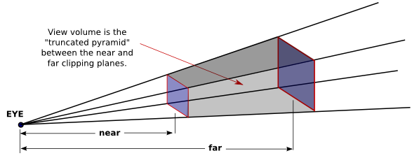
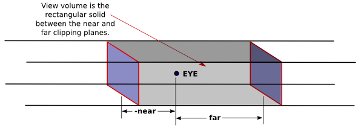

Computer graphics is a very mathematical subject. Most of the mathematics is hidden in the implementation, but if you want to really understand what is going on, you need to know some of the math. In this section, we look at the mathematical background without going too deeply into it. Then, we return the the topic of transformations to consider them in more deatil
The mathematics of computer graphics is primarily linear algebra, which is the study of vectors and matrices, where the matrices are important because they represent transformations. A vector is a quantity that has a length and a direction. A vector can be visualized as an arrow, as long as you remember that it is the length and direction of the arrow that are relevant, and that its specific location is irrelevant. We have already briefly encountered normal vectors, which are used to specify the direction in which a surface is facing.
If we visualize a vector V as starting at the origin and ending at a point P, then we can to a certain extent identify V with P—at least to the extent that both V and P have coordinates, and their coordinates are the same. For example, the 3D point (x,y,z) = (3,4,5) has the same coordinates as the vector (dx,dy,dz) = (3,4,5). For the point, the coordinates (3,4,5) specify a position in space in the xyz coordinate system. For the vector, the coordinates (3,4,5) specify the change in the x, y, and z coordinates along the vector. If we represent the vector with an arrow that starts at the origin (0,0,0), then the head of the arrow will be at (3,4,5). But we could just as well visualize the vector as an arrow that starts at the point (1,1,1), and in that case the head of the arrow would be at the point (4,5,6).
The distinction between a point and a vector is subtle. For some purposes, the distinction can be ignored; for other purposes, it is important. Often, all that we have is a sequence of numbers, which we can treat as the coordinates of either a vector or a point at will.
Matrices are rectangular arrays of numbers. A matrix can be used to apply a transformation to a vector (or to a point). The geometric transformations that are so important in computer graphics are represented as matrices.
In this section, we will look at vectors and matrices and at some of the ways that they can be used. The treatment is not very mathematical. The goal is to familiarize you with the properties of vectors and matrices that are most relevant to OpenGL.
We assume for now that we are talking about vectors in three dimensions. A 3D vector can be specified by a triple of numbers, such as (0,1,0) or (3.7,−12.88,0.02). Most of the discussion, except for the "cross product," carries over easily into other dimensions.
One of the basic properties of a vector is its length. In terms of its coordinates, the length of a vector (x,y,z) is given by sqrt(x2+y2+z2). (This is just the Pythagorean theorem in three dimensions.) If v is a vector, its length is denoted by |v|. The length of a vector is also called its norm.
Vectors of length 1 are particularly important. They are called unit vectors. If v = (x,y,z) is any vector other than (0,0,0), then there is exactly one unit vector that points in the same direction as v. That vector is given by
( x/length, y/length, z/length )
where length is the length of v. Dividing a vector by its length is said to normalize the vector: The result is a unit vector that points in the same direction as the original vector. (There is some unfortunate terminology here: The terms "norm" and "normalize" have little to do with the idea of a normal vector to a surface, except that normal vectors are usually taken to be unit vectors.)
Given two vectors v1 = (x1,y1,z1) and v2 = (x2,y2,z2), the dot product of v1 and v2 is denoted by v1·v2 and is defined by
v1·v2 = x1*x2 + y1*y2 + z1*z2
Note that the dot product is a number, not a vector. The dot product has several very important geometric meanings. First of all, note that the length of a vector v is just the square root of v·v. Furthermore, the dot product of two non-zero vectors v1 and v2 has the property that
cos(angle) = v1·v2 / (|v1|*|v2|)
where angle is the measure of the angle from v1 to v2. In particular, in the case of two unit vectors, whose lengths are 1, the dot product of two unit vectors is simply the cosine of the angle between them. Furthermore, since the cosine of a 90-degree angle is zero, two non-zero vectors are perpendicular if and only if their dot product is zero. Because of these properties, the dot product is particularly important in lighting calculations, where the effect of light shining on a surface depends on the angle that the light makes with the surface.
The dot product is defined in any dimension. For vectors in 3D, there is another type of product called the cross product, which also has an important geometric meaning. For vectors v1 = (x1,y1,z1) and v2 = (x2,y2,z2), the cross product of v1 and v2 is denoted v1×v2 and is the vector defined by
v1×v2 = ( y1*z2 - z1*y2, z1*x2 - x1*z2, x1*y2 - y1*x2 )
If v1 and v2 are non-zero vectors, then v1×v2 is zero if and only if v1 and v2 point in the same direction or in exactly opposite directions. Assuming v1×v2 is non-zero, then it is perpendicular both to v1 and to v2; furthermore, the vectors v1, v2, v1×v2 follow the right-hand rule; that is, if you curl the fingers of your right hand from v1 to v2, then your thumb points in the direction of v1×v2. If v1 and v2 are unit vectors, then the cross product v1×v2 is also a unit vector, which is perpendicular both to v1 and to v2.
Finally, I will note that given two points P1 = (x1,y1,z1) and P2 = (x2,y2,z2), the difference P2−P1 which is defined by
P2 − P1 = ( x2 − x1, y2 − y1, z2 − z1 )
is a vector that can be visualized as an arrow that starts at P1 and ends at P2. Now, suppose that P1, P2, and P3 are vertices of a polygon. Then the vectors P1−P2 and P3−P2 lie in the plane of the polygon, and so the cross product
(P3−P2) × (P1−P2)is a vector that is perpendicular to the polygon. That is, it is a normal vector to the polygon. This fact allows us to use the vertices of a polygon to produce a normal vector to the polygon. Once we have that, we can normalize the vector to produce a unit normal. (It's possible for the cross product to be zero. This will happen if P1, P2, and P3 lie on a line. In that case, another set of three vertices might work. Note that if all the vertices of a polygon lie on a line, then the polygon degenerates to a line segment and has no interior points at all. We don't need normal vectors for such polygons.)
A matrix is just a two-dimensional array of numbers. Suppose that a matrix M has r rows and c columns. Let v be a c-dimensional vector, that is, a vector of c numbers. Then it is possible to multiply M by v to yield another vector, which will have dimension r. For a programmer, it's probably easiest to define this type of multiplication with code. Suppose that we represent M and v by the Java arrays
double[][] M = new double[r][c]; double[] v = new double[c];
Then we can define the product w = M*v as follows:
double w = new double[r];
for (int i = 0; i < r; i++) {
w[i] = 0;
for (int j = 0; j < c; j++) {
w[i] = w[i] + (M[i][j] * v[j]);
}
}
If you think of a row, M[i], of M as being a c-dimensional vector, then w[i] is simply the dot product M[i]·v.
Using this definition of the multiplication of a vector by a matrix, a matrix defines a transformation that can be applied to one vector to yield another vector. Transformations that are defined in this way are called linear transformations, and they are the main object of study in the field of mathematics known as linear algebra.
Rotation, scaling, and shear are linear transformations, but translation is not. To include translations, we have to widen our view to expand the idea of transformation to include affine transformations. An affine transformation can be defined, roughly, as a linear transformation followed by a translation. For computer graphics, we are interested in affine transformations in three dimensions. However—by what seems at first to be a very odd trick—we can narrow our view back to the linear by moving into the fourth dimension.
Note first of all that an affine transformation in three dimensions transforms a vector (x1,y1,z1) into a vector (x2,y2,z2) given by formulas
x2 = a1*x1 + a2*y1 + a3*z1 + t1 y2 = b1*x1 + b2*y1 + b3*z1 + t2 z2 = c1*x1 + c2*y1 + c3*z1 + t3
These formulas express a linear transformation given by multiplication by the 3-by-3 matrix
a1 a2 a3 b1 b2 b3 c1 c2 c3
followed by translation by t1 in the x direction, t2 in the y direction and t3 in the z direction. The trick is to replace each three-dimensional vector (x,y,z) with the four-dimensional vector (x,y,z,1), adding a "1" as the fourth coordinate. And instead of the 3-by-3 matrix, we use the 4-by-4 matrix
a1 a2 a3 t1 b1 b2 b3 t2 c1 c2 c3 t3 0 0 0 1
If the vector (x1,y1,z1,1) is multiplied by this 4-by-4 matrix, the result is precisely the vector (x2,y2,z2,1). That is, instead of applying an affine transformation to the 3D vector (x1,y1,z1), we can apply a linear transformation to the 4D vector (x1,y1,z1,1).
This might seem pointless to you, but nevertheless, that is what OpenGL does: It represents affine transformations as 4-by-4 matrices, in which the bottom row is (0,0,0,1), and it converts three-dimensional vectors into four dimensional vectors by adding a 1 as the final coordinate. The result is that all the affine transformations that are so important in computer graphics can be implemented as matrix multiplication.
One advantage of using matrices to represent transforms is that matrices can be multiplied. In particular, if A and B are 4-by-4 matrices, then their matrix product A*B is another 4-by-4 matrix. Each of the matrices A, B, and A*B represents a linear transformation. The important fact is that applying the single transformation A*B to a vector v has the same effect as first applying B to v and then applying A to the result. Mathematically, this can be said very simply: (A*B)*v = A*(B*v). For computer graphics, it means that the operation of following one transform by another can be represented simply by multiplying their matrices. This allows OpenGL to keep track of a single matrix, rather than a sequence of individual transforms. Transform commands such as glRotatef and glTranslated are implemented as matrix multiplication: The current matrix is multiplied by a matrix representing the transform that is being applied, yielding a matrix that represents the combined transform. You might compose your transform as a long sequence of rotations scalings, and translations, but when the transform is actually applied to a vertex, only a single matrix multiplication is necessary. The matrix that is used represents the entire sequence of transforms, all multiplied together. It's really a very neat system.
The transformations that are used in computer graphics can be thought of as transforming coordinate systems. A coordinate system is a way of assigning coordinates to points. How this is done is to some extent arbitrary, and transformations transform from one arbitrary assignment of coordinates to another. OpenGL uses a variety of coordinate systems and transformations between them.
The coordinates that you actually use for drawing an object are called object coordinates. The object coordinate system is chosen to be convenient for the object that is being drawn. A modeling transformation can then be applied to set the size, orientation, and position of the object in the overall scene (or, in the case of hierarchical modeling, in the object coordinate system of a larger, more complex object). The modeling transformation is the first that is applied to the vertices of an object.
The coordinates in which you build the complete scene are called world coordinates. These are the coordinates for the overall scene, the imaginary 3D world that you are creating. The modeling transformation maps from object coordinates to world coordinates.
In the real world, what you see depends on where you are standing and the direction in which you are looking. That is, you can't make a picture of the scene until you know the position of the "viewer" and where the viewer is looking and, if you think about it, how the viewer's head is tilted. For the purposes of OpenGL, we imagine that the viewer is attached to their own individual coordinate system, which is known as eye coordinates. In this coordinate system, the viewer is at the origin, (0,0,0), looking in the direction of the negative z-axis, and the positive direction of the y-axis is pointing straight up. This is a viewer-centric coordinate system, and it's important because it determines what exactly is seen in the image. In other words, eye coordinates are (almost) the coordinates that you actually want to use for drawing on the screen. The transform from world coordinates to eye coordinates is called the viewing transform.
If this is confusing, think of it this way: We are free to use any coordinate system that we want on the world. Eye coordinates are the natural coordinate system for making a picture of the world as seen by a viewer. If we used a different coordinate system (world coordinates) when building the world, then we have to transform those coordinates to eye coordinates to find out what the viewer actually sees. That transformation is the viewing transform.
Note, by the way, that OpenGL doesn't keep track of separate modeling and viewing transforms. They are combined into a single modelview transform. In fact, OpenGL doesn't even use world coordinates internally; it goes directly from object coordinates to eye coordinates by applying the modelview transformation.
We are not done. The viewer can't see the entire 3D world, only the part that fits into the viewport, the rectangular region of the screen or other display device where the image will be drawn. We say that the scene is clipped by the edges of the viewport. Furthermore, in OpenGL, the viewer can see only a limited range of z-values. Points with larger or smaller z-values are clipped away and are not rendered into the image. (This is not, of course, the way that viewing works in the real world, but it's required by the use of the depth test in OpenGL.) The volume of space that is actually rendered into the image is called the view volume. Things inside the view volume make it into the image; things that are not in the view volume are clipped and cannot be seen. For purposes of drawing, OpenGL applies a coordinate transform that maps the view volume onto a cube. The cube is centered at the origin and extends from −1 to 1 in the x-direction, in the y-direction, and in the z-direction. The coordinate system on this cube is referred to as clip coordinates. The transformation from eye coordinates to clip coordinates is called the projection transformation. At this point, we haven't quite projected the 3D scene onto a 2D surface, but we can now do so simply by discarding the z-coordinate.
We still aren't done. In the end, when things are actually drawn, there are device coordinates, the 2D coordinate system in which the actual drawing takes place on a physical display device such as the computer screen. Ordinarily, in device coordinates, the pixel is the unit of measure. The drawing region is a rectangle of pixels. This is the rectangle that is called the viewport. The viewport transformation takes x and y from the clip coordinates and scales them to fit the viewport.
Let's go through the sequence of transformations one more time. Think of a primitive, such as a line or triangle, that is part of the world and that might appear in the image that we want to make of the world. The primitive goes through the following sequence of operations:
"Modeling" and "viewing" might seem like very different things, conceptually, but OpenGL combines them into a single transformation. This is because there is no way to distinguish between them in principle; the difference is purely conceptual. That is, a given transformation can be considered to be either a modeling transformation or a viewing transformation, depending on how you think about it.
For example, suppose that there is a model of a house at the origin, facing towards the direction of the positive z-axis. Suppose the viewer is on the positive z-axis, looking back towards the origin. The viewer is looking directly at the front of the house. Now, you might apply a modeling transformation to the house, to rotate it by 90 degrees about the y-axis. After this transformation, the house is facing in the positive direction of the x-axis, and the viewer is looking directly at the left side of the house. On the other hand, you might rotate the viewer by −90 degrees about the y-axis. This would put the viewer on the negative x-axis, which would give it a view of the left side of the house. The net result after either transformation is that the viewer ends up with exactly the same view of the house. Either transformation can be implemented in OpenGL with the command
glRotatef(90,0,1,0);
That is, this command represents either a modeling transformation that rotates an object by 90 degrees or a viewing transformation that rotates the viewer by −90 degrees. Note that the effect on the viewer is the inverse of the effect on the object. Modeling and viewing transforms are always related in this way. For example, if you are looking at an object, you can move yourself 5 feet to the left (viewing transform), or you can move the object 5 feet to the right (modeling transform). In either case, you end up with the same view of the object. Both transformations might be represented in OpenGL as something like
glTranslatef(5,0,0);
This even works for scaling: If the viewer shrinks, it will look to the viewer exactly the same as if the world is expanding, and vice-versa.
Although modeling and viewing transformations are the same in principle, they remain very different conceptually, and they are typically applied at different points in the code. In general when drawing a scene, you will do the following: (1) Load the identity matrix, for a well-defined starting point; (2) apply the viewing transformation; and (3) draw the objects in the scene, each with its own modeling transformation. Remember that OpenGL keeps track of several transformations, and that this must all be done while the modelview transform is current; if you are not sure of that then before step (1), you should call glMatrixMode(GL_MODELVIEW). During step (3), you will probably use glPushMatrix() and glPopMatrix() to limit each modeling transform to a particular object.
After loading the identity matrix, the viewer is in the default position, at the origin, looking down the negative z-axis, with the positive y-axis pointing upwards in the view. Suppose, for example, that we would like to move the viewer from its default location at the origin back along the positive z-axis from the origin to the point (0,0,20). This operation has exactly the same effect as moving the world, and the objects that it contains, 20 units in the negative direction along the z-axis—whichever operation is performed, the viewer ends up in exactly the same position relative to the objects. Both operations are implemented by the same OpenGL command, gl.glTranslatef(0,0,-20). For another example, suppose that we use two commands
gl.glRotatef(90,0,1,0); gl.glTranslatef(10,0,0);
to establish the viewing transformation. As a modeling transform, these commands would first translate an object 10 units in the positive x-direction, then rotate the object 90 degrees about the y-axis. (Remember that modeling transformations are applied to objects in the order opposite to their order in the code.) What do these commands do as a viewing transformation? The effect on the view is the inverse of the effect on objects. The inverse of "translate 90 then rotate 10" is "rotate −10 then translate −90." That is, to do the inverse, you have to undo the rotation before you undo the translation. The effect as a viewing transformation is first to rotate the viewer by −90 degrees about the y-axis, then to translate by −10 along the x-axis. (You should think about the two interpretations affect the view of an object that starts out at the origin.) Note that the order in which viewing transformations are applied is the same as the order in which they occur in the code.
It can be difficult to set up a view by combining rotations, scalings, and translations, so OpenGL provides an easier way to set up a typical view. The command is not part of OpenGL itself but is part of another standard library called GLU (not to be confused with GLUT).
The GLU library provides the following convenient method for setting up a viewing transformation:
gluLookAt( eyeX,eyeY,eyeZ, refX,refY,refZ, upX,upY,upZ );
This method places the viewer at the point (eyeX,eyeY,eyeZ), looking in the direction of the point (refX,refY,refZ). The viewer is oriented so that the vector (upX,upY,upZ) points upwards in the viewer's view. For example, to position the viewer on the positive x-axis, 10 units from the origin, looking back at the origin, with the positive direction of the y-axis pointing up as usual, use
gluLookAt( 10,0,0, 0,0,0, 0,1,0 );
To use GLU in C, you should include the GLU header file in your program by adding the directive #include "gl/GLU.h" at the beginning of the program. When compiling he program, you need to link to the GLU library. For example:
gcc myProgram.c -lglut -lGLU
To use GLU in Java with JOGL, you need an object of type GLU. This class is in the package javax.media.opengl. You need to create an object of type GLU:
GLU glu = new GLU();
and use it to call GLU routines such as gluLookAt:
glu.gluLookAt( eyeX,eyeY,eyeZ, refX,refY,refZ, upX,upY,upZ );
With all this, we can give an outline for a typical display routine. In the C version:
// possibly set clear color here, if not set elsewhere glClear( GL_COLOR_BUFFER_BIT | GL_DEPTH_BUFFER_BIT ); // possibly set up the projection here, if not done elsewhere glMatrixMode( GL_MODELVIEW ); glLoadIdentity(); gluLookAt( eyeX,eyeY,eyeZ, refX,refY,refZ, upX,upY,upZ ); // Viewing transform glPushMatrix(); . . // apply modeling transform and draw an object . glPopMatrix(); glPushMatrix(); . . // apply another modeling transform and draw another object . glPopMatrix(); . . .
To finish this discussion of transformation, we need to consider the projection transformation. Recall that projection transforms from eye coordinates to clip coordinates by mapping the view volume to the 2-by-2-by-2 cube centered at the origin. Specifying a projection is really just a matter of specifying the view volume. The viewing transform determines where the viewer is looking, but it doesn't say how much of the world the viewer can see. That's the point of the view volume.
There are two general types of projection, perspective projection and orthographic projection. Perspective projection gives a realistic view. That is, it shows what you would see if the OpenGL display rectangle on your computer screen were a window into an actual 3D world (one that could extend in front of the screen as well as behind it). It shows a view that you could get by taking a picture of a 3D world with a camera. In a perspective view, the apparent size of an object depends on how far it is away from the viewer. Only things that are in front of the viewer can be seen. In fact, ignoring clipping in the z-direction for the moment, the part of the world that is in view is an infinite pyramid, with the viewer at the apex of the pyramid, and with the sides of the pyramid passing through the sides of the viewport rectangle.
However, OpenGL can't actually show everything in this pyramid, because of its use of the depth buffer to solve the hidden surface problem. Since the depth buffer can only store a finite range of depth values, it can't represent the entire range of depth values for the infinite pyramid that is theoretically in view. Only objects in a certain range of distances from the viewer are shown in the image that OpenGL produces. That range of distances is specified by two values, near and far. For a perspective transformation, both of these values must be positive numbers, and far must be greater than near. Anything that is closer to the viewer than the near distance or farther away than the far distance is discarded and does not appear in the rendered image. The volume of space that is represented in the image is thus a "truncated pyramid." This pyramid is the view volume for a perspective projection:

The view volume is bounded by six planes—the four sides plus the top and bottom of the pyramid. These planes are called clipping planes because anything that lies on the wrong side of each plane is clipped away.
In OpenGL, setting up the projection transformation is equivalent to defining the view volume. For a perspective transformation, you have to set up a view volume that is a truncated pyramid. A rather obscure term for this shape is a frustum, and a perspective transformation can be set up with the glFrustum command
glFrustum(xmin,xmax,ymin,ymax,near,far)
The last two parameters specify the near and far distances from the viewer, as already discussed. The viewer is assumed to be at the origin, (0,0,0), facing in the direction of the negative z-axis. (This is the eye coordinate system.) So, the near clipping plane is at z = −near, and the far clipping plane is at z = −far. The first four parameters specify the sides of the pyramid: xmin, xmax, ymin, and ymax specify the horizontal and vertical limits of the view volume at the near clipping plane. For example, the coordinates of the upper-left corner of the small end of the pyramid are (xmin,ymax,−near). Note that although xmin is usually equal to the negative of xmax and ymin is usually equal to the negative of ymax, this is not required. It is possible to have asymmetrical view volumes where the z-axis does not point directly down the center of the view.
Orthographic projections are comparatively easy to understand: A 3D world is projected onto a 2D image by discarding the z-coordinate of the eye-coordinate system. This type of projection is unrealistic in that it is not what a viewer would see. For example, the apparent size of an object does not depend on its distance from the viewer. Objects in back of the viewer as well as in front of the viewer are visible in the image. In fact, it's not really clear what it means to say that there is a viewer in the case of orthographic projection. Orthographic projections are still useful, however, especially in interactive modeling programs where it is useful to see true sizes and angles, undistorted by perspective.
Nevertheless, for orthographic projection in OpenGL, there is considered to be a viewer. The viewer is located at the eye-coordinate origin, facing in the direction of the negative z-axis. Theoretically, a rectangular corridor extending infinitely in both directions, in front of the viewer and in back, would be in view. However, as with perspective projection, only a finite segment of this infinite corridor can actually be shown in an OpenGL image. This finite view volume is a parallelepiped—a rectangular solid—that is cut out of the infinite corridor by a near clipping plane and a far clipping plane. The value of far must be greater than near, but for an orthographic projection, the value of near is allowed to be negative, putting the "near" clipping plane behind the viewer, as it is in this illustration:

Note that a negative value for near puts the near clipping plane on the positive z-axis, which is behind the viewer.
An orthographic projection can be set up in OpenGL using the glOrtho method, which is has the following form:
glOrtho(xmin,xmax,ymin,ymax,near,far);
The first four parameters specify the x- and y-coordinates of the left, right, bottom, and top of the view volume. Note that the last two parameters are near and far, not zmin and zmax. In fact, the minimum z-value for the view volume is −far and the maximum z-value is −near. However, it is often the case that near = −far, and if that is true then the minimum and maximum z-values turn out to be near and far after all!
Remember that when setting up the projection transform, the matrix mode must be set to GL_PROJECTION. Furthermore, the identity matrix should be loaded before setting the projection (since glFrustum and glOrtho modify the existing projection matrix rather than replacing it, and you don't even want to try to think about what would happen if you combine several projection matrices into one). So, setting the projection often looks like this, leaving the matrix mode set to GL_MODELVIEW at the end:
gl.glMatrixMode(GL.GL_PROJECTION); gl.glLoadIdentity(); gl.glFrustum(xmin,xmax,ymin,ymax,near,far); // or glOrtho gl.glMatrixMode(GL.GL_MODELVIEW);
This might be used in an initialization routine, if you want to use the same projection for the whole program. Another possibility is to put it in the reshape routine, where you can take the aspect ratio of the viewport into account. Or you could do it at the start of the display routine, where it will be done every time the scene is redrawn.
The glFrustum method is not particularly easy to use. The GLU library includes the method gluPerspective as an easier way to set up a perspective projection. The command
gluPerspective(fieldOfViewAngle, aspect, near, far);
can be used instead of glFrustum. The fieldOfViewAngle is the vertical angle, measured in degrees, between the top of the view volume pyramid and the bottom. A typical value is 45 degrees. The aspect parameter is the aspect ratio of the view, that is, the width of the pyramid at a given distance from the eye, divided by the height at the same distance. The value of aspect should generally be set to the aspect ratio of the viewport, that is, the width of the viewport divided by its height. The near and far parameters have the same meaning as for glFrustum.
Projection and viewing are often discussed using the analogy of a camera. A camera is used to take a picture of a 3D world. Setting up the viewing transformation is like positioning and pointing the camera. The projection transformation determines the properties of the camera: What is its field of view? (Of course, the analogy breaks in at least one respect, since a real camera doesn't do clipping in its z-direction.)
I have written a camera utility to implement this idea. The camera is meant to completely take over the job of setting the projection and view. Instead of doing that by hand, you set properties of the camera. The API is somewhat different in Java and in C. I will discuss the C implementation first.
In C, the camera is defined by a .c file, camera.c and a corresponding header file , camera.h. Full documentation can be found in the header file. To use the camera, you should #include "camera.h" at the start of your program, and when you compile the program, you should include camera.c in the list of files that you want to compile. The camera depends on the GLU library and on C's standard math library, so you have to make sure that those libraries are available when it is compiled. For example:
gcc myglutprog.c camera.c -lGL -lglut -lGLU -lm
To use the camera, you have to call
cameraApply();
at the beginning of the display function. Calling this function completely replaces all code for setting up the projection and viewing transformations, and it leaves the matrix mode set to GL_MODELVIEW. You can configure the camera by calling these functions, but remember that the settings are not used until you call cameraApply:
cameraLookAt( eyeX,eyeY,eyeZ, refX,refY,refZ, upX,upY,upZ );
// Determines the viewing transform, just like gluLookAt
// Default is cameraLookAt( 0,0,30, 0,0,0, 0,1,0 );
cameraSetLimits( xmin, xmax, ymin, ymax, zmin, zmax );
// Sets the limits on the view volume, where zmin and zmax are
// given with respect to the view reference point, NOT the eye,
// and the xy limits are measured at the distance of the
// view reference point, NOT the near distance.
// Default is cameraSetLimits( -5,5, -5,5, -10,10 );
cameraSetScale( limit );
// a convenience method, which is the same as calling
// cameraSetLimits( -limit,limit, -limit,limit, -2*limit, 2*limit );
cameraSetOrthographic( isOrtho );
// Switch between orthographic and perspective projection.
// The parameter should be 0 for perspective, 1 for
// orthographic. The default is perspective.
cameraSetPreserveAspect( preserve );
// Determine whether the aspect ratio of the viewport should
// be respected. The parameter should be 0 to ignore and
// 1 to respect the viewport aspect ratio. The default
// is to preserve the aspect ratio.
The camera comes along with a simulated trackball. The trackball allows the user to rotate the view by clicking and dragging the mouse on the display. To use it with GLUT in C, you just need to install a mouse function and a mouse motion functions by calling
glutMouseFunc( trackballMouseFunction ); glutMotionFunc( trackballMotionFunction );
when you want to enable the trackball. The functions trackballMouseFunction and trackballMotionFunction are defined as part of the camera library and are declared in camera.h. The trackball works by modifying the viewing transformation associated with the camera, and it only works if cameraApply() is called at the beginning of the display function to set the viewing and projection transformations.
A camera and trackball are also available for use with JOGL, in a Camera class, defined in file Camera.java. The camera is meant for use with a GLJPanel or GLCanvas. To use one, you have to create an object of type Camera:
Camera camera = new Camera();
and at the start of the display() method you must call
camera.apply(gl);
where gl is the OpenGL drawing context of type GL2. (Note the presence of the parameter gl, which was not necessary in C!) As in the C version, this sets the viewing and projection transformations and should completely replace any other code that you would use for that purpose. The functions for configuring the camera are the same in Java as in C, except that they become methods in the camera object, and true/false parameters are boolean instead of int:
camera.lookAt( eyeX,eyeY,eyeZ, refX,refY,refZ, upX,upY,upZ ); camera.setLimits( xmin,xmax, ymin,ymax, zmin,zmax ); camera.setScale( limit ); camera.setOrthographic( isOrtho ); // isOrtho is of type boolean camera.setPreserveAspect( preserve ); // preserve is of type boolean
To install a trackball for use with the camera, call
camera.installTrackball(gldrawable);
where gldrawabel is the component on which the camera is used, probably a GLJPanel or GLCanvas.
The camera API allows you to change the position and orientation of the camera, but it doesn't make it possible to do so by applying transformations, which is the usual way of placing an object into the world. Suppose that we want to think of the viewer (or eye or camera) as an object like other objects in the world, and we want to be able to move it around in the world by applying a modeling transformation, as we do for other objects. A viewer that can be manipulated in this way is sometimes called an avatar. Ideally, we would like to be able to add some kind of avatar object to a scene graph, and then change or animate the avatar's point of view by applying modeling transformations to that node of the scene graph.
But there are two problems with thinking of a viewer as an object. First of all, the viewing transformation must be applied at the beginning, before any geometry is drawn. This means that you can't simply traverse the scene graph in the usual way and implement the avatar at the point where it is encountered in the scene graph, since before you get to that node, you will have already drawn the geometry in other nodes that you have encountered. The second problem is the inverse relation between modeling and viewing transformation: If you want to apply a modeling transformation to the avatar object, you really need to apply the inverse of that modeling transformation as the viewing transformation.
The easiest way to think about how to solve these problems is to imagine the scene graph as a linked data structure. To implement the avatar, we need to include "parent pointers" in the data structure that point from a node to its parent in the scene graph. Parent pointers allow you to move up the scene graph, in the direction of the root. Then, to implement the avatar, start from the avatar node in the scene graph. Call glLoadIdentity() to initialize the modelview transformation. Then move up the scene graph, following parent pointers. When you encounter a modeling transformation, apply the inverse of that transformation. (These inverses will be applied in the reverse order from their order as modeling transformations. This is the correct way to compute the inverse of a sequence of transforms. Mathematically, (S*R)−1 = R−1*S−1.) Stop when you get to the root of the scene graph. At that point, the modelview transform contains exactly the viewing transformation that you want, and you are ready to traverse the scene graph to draw the geometry. (In that traversal, the avatar node should be ignored.)
If the scene graph is implemented procedurally rather than as a data structure, you have to do things differently, but the end result should be the same. One possibility is to do two traversals of the scene graph, one to find and implement the avatar and one to draw the geometry.
We finish this section with a bit of mathematical detail about the implementation of transformations. There is one transformation in computer graphics that is not an affine transformation: In the case of a perspective projection, the projection transformation is not affine. In a perspective projection, an object will appear to get smaller as it moves farther away from the viewer, and that is a property that no affine transformation can express, since affine transforms preserve parallel lines and parallel lines will seem to converge in the distance in a perspective projection.
Surprisingly, we can still represent a perspective projection as a 4-by-4 matrix, provided we are willing to stretch our use of coordinates even further than we have already. We have already represented 3D vectors by 4D vectors in which the fourth coordinate is 1. We now allow the fourth coordinate to be anything at all. When the fourth coordinate, w, is non-zero, we consider the coordinates (x,y,z,w) to represent the three-dimensional vector (x/w,y/w,z/w). Note that this is consistent with our previous usage, since it considers (x,y,z,1) to represent (x,y,z), as before. When the fourth coordinate is zero, there is no corresponding 3D vector, but it is possible to think of (x,y,z,0) as representing a 3D "point at infinity" in the direction of (x,y,z), as long as at least one of x, y, and z are zero.
Coordinates (x,y,z,w) used in this way are referred to as homogeneous coordinates. If we use homogeneous coordinates, then any 4-by-4 matrix can be used to transform three-dimensional vectors, and among the transformations that can be represented in this way is the projection transformation for a perspective projection. And in fact, this is what OpenGL does internally. It represents all three-dimensional points and vectors using homogeneous coordinates, and it represents all transformations as 4-by-4 matrices. You can even specify vertices using homogeneous coordinates. For example, the command
gl.glVertex4d(x,y,z,w);
generates the 3D point (x/w,y/w,z/w). Fortunately, you will almost never have to deal with homogeneous coordinates directly. The only real exception to this is that homogeneous coordinates are required, surprisingly, when configuring OpenGL lighting, as we'll see in the next section.